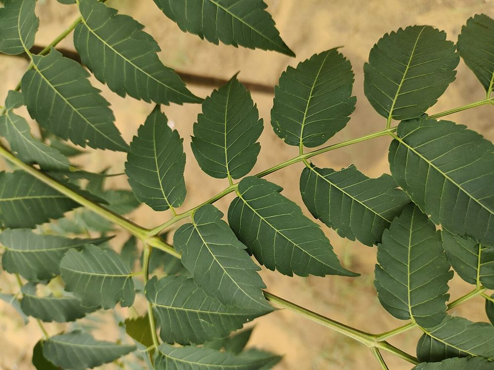

🌿 சித்த மருத்துவக் குறிப்பு:
மலைவேம்பின் இலைகள் தோல் நோய்களுக்கான பாரம்பரிய மருந்துகளில் பயன்படுகின்றன.
🎯 முக்கியப் பயன்: மலட்டுத்தன்மை நீங்கிக் கருத்தரிக்க உதவும் சித்த மருந்துகளில் பாரம்பரியமாகப் பயன்படுகிறது.
⚠️ இதன் காய், விதைகள் நச்சுத்தன்மை உடையவை – வீட்டில் உட்கொள்ளக் கூடாது.
உங்களுக்குத் தெரியுமா?
1அதிவேக வளர்ச்சி மரம்
நட்ட 5–8 ஆண்டுகளிலேயே 40 அடிக்கு மேல் வளர்ந்து அறுவடைக்குத் தயாராகும் அதிவேக மரம் இது.
2விவசாயியின் "வைப்பு நிதி"
இதன் மரம் ஒட்டுப்பலகை (Plywood), தீக்குச்சி, பென்சில் தயாரிக்கப் பயன்படுவதால், விவசாயிகள் இதை "வயலில் வைத்த வைப்பு நிதி" என்கின்றனர்.
3வேம்பு போலத் தோன்றும், ஆனால் வேம்பு அல்ல
இலைகள் வேப்பிலை போல் இருந்தாலும் அளவில் பெரியவை. வேம்பின் குடும்பத்தைச் சேர்ந்த தனி இனம் இது.
இந்தத் தகவல் பயனுள்ளதாக இருந்ததா?